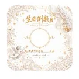
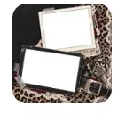

9:41
•••
5G
拼贴
一下
模板库
我的模板
→
搜索生日、日常、旅行模板
全部
日常
生日
旅行
节日
先选版式，再选主题。生日模板还可以选择月份和日历版本。
按版式挑
查看全部
→
三宫格
3 张照片
四宫格
4 张照片
九宫格
9 张照片
生日模板
按月份筛选
→
九宫格 · 日历
生日九宫格 · 月历
选择月份
三宫格 · 白金

白金生日倒数
温柔纪念
四宫格 · 黑金
黑金千金
生日派对
九宫格 · 棕色
复古相册
怀旧主题
四宫格 · 黑红
黑红派对
酷感主题
四宫格 · 豹纹

Wild Birthday
大胆主题
模板
收藏
创作
我的